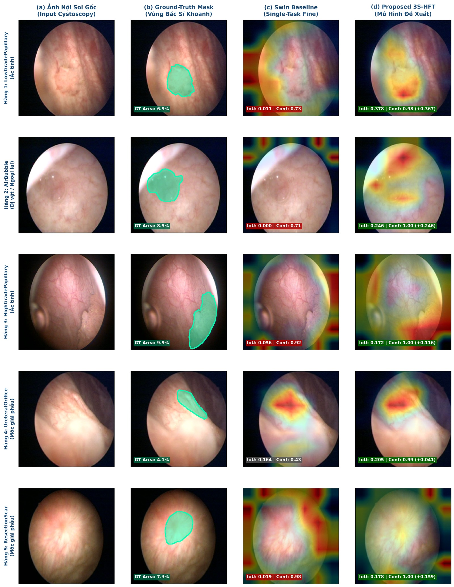

NGHIÊN CỨU PHÁT TRIỂN HỆ THỐNG TRÍ TUỆ NHÂN TẠO HỌC PHÂN CẤP ĐA TẦNG HỖ TRỢ CHẨN ĐOÁN HÌNH ẢNH NỘI SOI BÀNG QUANG THỜI GIAN THỰC
Dự Án: CystoHier — Phân Loại 3 Cấp Độ Chẩn Đoán Đồng Thời Với Chiến Lược Huấn Luyện 3 Giai Đoạn
Bản Đồ Dự Án Trong 60 Giây (Executive Pitch)
Bối Cảnh Y Học & Tính Cấp Thiết Của Đề Tài
Ung Thư Bàng Quang — "Sát Thủ Thầm Lặng" Đường Tiết Niệu
Khoảng 573.000 ca mắc mới và 213.000 ca tử vong mỗi năm trên toàn cầu. Tỷ lệ tái phát sau phẫu thuật nội soi lên tới 50% – 70%, buộc người bệnh phải theo dõi định kỳ suốt đời.
Rào Cản Cốt Lõi: Mâu Thuẫn Logic Phả Hệ Chẩn Đoán
➔ Đầu Chi Tiết (Fine) đoán: "Ung thư biểu mô tại chỗ (CIS)" (Ác tính)
➔ Nhưng Đầu Nhóm Thô (Coarse) lại đoán: "Niêm mạc lành tính"!
• Hệ thống AI bắt buộc phải có ràng buộc phả hệ chặt chẽ: Dự đoán lớp con chi tiết phải thuộc đúng nhóm lớp cha được chỉ định.
• Phải giải quyết sự xung đột gradient giữa các cấp độ chẩn đoán khác nhau để mô hình đạt độ chính xác tối ưu trên cả 3 tầng.
Mục Tiêu Nghiên Cứu & Giả Thuyết Khoa Học
• Mục tiêu 2: Ứng dụng chiến lược huấn luyện tách rời 3 giai đoạn (3S-HFT) giúp tối ưu hóa độc lập ranh giới phân loại cho từng tầng chẩn đoán.
• Mục tiêu 3: Minh bạch hóa vùng nhìn bằng bản đồ nhiệt Grad-CAM trùng khớp giải phẫu và xây dựng phần mềm Web Dashboard đạt tốc độ thời gian thực ≥ 60 FPS trong phòng mổ.
Quy Trình Nghiên Cứu Chuẩn Mực (Standard Pipeline)
Tập Dữ Liệu Y Tế & Tiền Xử Lý Hình Ảnh
Bộ Dữ Liệu Chuẩn Quốc Tế CystoDS
- Tổng số: 8.067 ảnh nội soi kỹ thuật số từ 160 bệnh nhân.
- Bao gồm 7.009 ảnh ánh sáng trắng (WLC) và 1.058 ảnh dải tần hẹp (NBI).
- Được dán nhãn chuẩn xác bởi các chuyên gia niệu khoa đầu ngành.
- Tiền xử lý: Cắt tỉa trung tâm FOV Center Crop (0.92) để loại bỏ viền đen ống soi, đưa ảnh về kích thước chuẩn $224 \times 224$ pixel.
• 70% Train (112 Bệnh nhân)
• 15% Validation (24 Bệnh nhân)
• 15% Test độc lập (24 Bệnh nhân — 337 ảnh)
• Ý nghĩa: Bệnh nhân ở tập kiểm tra hoàn toàn mới, khẳng định AI học bản chất bệnh học chứ không "nhớ màu da" của bệnh nhân.
Điểm Mới 1: Một Mô Hình Duy Nhất Xử Lý Cả 3 Cấp Độ Chẩn Đoán
Sử dụng mạng Swin Transformer chia sẻ ở tầng sâu và rẽ nhánh ra 3 đầu phân loại tương ứng với 3 tầng tư duy chẩn đoán y khoa:
- Non-ROI: Niêm mạc bình thường
- ROI: Vùng tổn thương nghi ngờ
- Malignant (Ác tính) • Non-malignant (Lành tính)
- Normal mucosa • Mốc giải phẫu • Dị vật
- Ung thư nhú độ cao • Độ thấp • CIS (Ung thư phẳng)
- Viêm bàng quang • U nhú niệu mạc • Sẹo diện cắt...
Điểm Mới 2: Chiến Lược Huấn Luyện Tách Rời 3 Giai Đoạn (3S-HFT)
Nếu huấn luyện cả 3 đầu cùng một lúc, các gradient sẽ xung đột và triệt tiêu nhau. Đề tài đề xuất quy trình 3S-HFT (Three-Stage Hierarchical Fine-Tuning) tối ưu từng tầng:
• Nhiệm vụ: Mạng nơ-ron tự do học các đặc trưng thị giác toàn cục (màu sắc, vân vi mạch máu, bờ khối u) của lòng bàng quang.
• Kết quả: Tạo không gian biểu diễn đặc trưng chất lượng cao.
• Nhiệm vụ: Giữ cố định đặc trưng hình thái, chỉ tập trung tối ưu ranh giới phân định 5 nhóm bệnh cảnh lâm sàng.
• Kết quả: Tăng độ chính xác phân nhóm mà không làm méo mó biểu diễn ảnh.
• Nhiệm vụ: Tập trung phân tách sắc nét ranh giới giữa 22 phân lớp bệnh lý cụ thể (đặc biệt là tổn thương phẳng CIS).
• Kết quả: Tối ưu hóa F1-score trên các phân lớp hiếm.
Bảng Đối Chuẩn Tổng Thể Trên Tập Test Độc Lập
| Mô hình / Kiến trúc | Binary AUROC | Độ nhạy Cấp 1 | Coarse Acc (Cấp 2) | Fine Macro-F1 (Cấp 3) | Độ nhất quán phả hệ |
|---|---|---|---|---|---|
| CystoHier (Đề xuất) | 0.9986 Top 1 | 98.45% | 86.42% +2.63% | 0.6450 p < 0.05 | 89.52% +8.32% |
| Swin-Tiny Baseline | 0.9989 | 98.76% | 83.79% | 0.6102 | 81.20% |
| HRNet-W18 Baseline | 0.9930 | 96.08% | 77.20% | 0.5704 | 76.40% |
| ResNeXt-50 Baseline | 0.9854 | 94.52% | 77.61% | 0.4024 | 74.50% |
| ResNet-152 (CNN Cổ điển) | 0.9740 | 93.70% | 75.08% | 0.3578 | 71.80% |
Minh Bạch Thị Giác: Bản Đồ Nhiệt Grad-CAM
Xóa Bỏ Định Kiến "Mô Hình Hộp Đen"
Bác sĩ cần biết AI căn cứ vào đâu để đưa ra kết luận. Hệ thống tích hợp bản đồ nhiệt Grad-CAM, tự động tô màu vùng hình ảnh mà mạng nơ-ron tập trung quan sát.
AI tập trung chính xác vào chân khối u và mạch máu tăng sinh, hoàn toàn không bị đánh lừa bởi bóng đen hay bọt khí rửa bàng quang.

Ảnh gốc nội soi ➔ Vùng bác sĩ khoanh định ➔ Bản đồ nhiệt Grad-CAM của CystoHier
Đo Lường Tốc Độ Thời Gian Thực & Tiêu Hao Tài Nguyên
Độ trễ toàn trình End-to-End chỉ vỏn vẹn 15.0 mili-giây / ảnh.
Sản Phẩm Thực Tế: Clinical Web Dashboard
Giao Diện Chuyên Khoa Phòng Mổ
- Hiển thị 3 cấp độ đồng thời: Đèn tín hiệu ROI ➔ Biểu đồ thanh 5 nhóm bệnh ➔ Tên bệnh chi tiết kèm % độ tự tin.
- Cảnh báo tức thời ung thư phẳng CIS: Nhấp nháy đỏ khẩn cấp khi phát hiện nguy cơ ung thư tại chỗ Tis.
- Thanh trượt so sánh Grad-CAM: Bác sĩ có thể kéo mờ/rõ bản đồ nhiệt đè lên ảnh gốc để đối soát mạch máu.
- Xuất phiếu bệnh án điện tử: Tự động xuất file PDF có ảnh chụp, vùng khoanh định và chữ ký bác sĩ.
Xây dựng hoàn chỉnh với React, TypeScript, FastAPI và nạp trực tiếp mô hình AI CystoHier tối ưu.
Kết Luận Khoa Học & Giá Trị Nhân Văn Của Đề Tài
2. Cơ chế ràng buộc phả hệ logic đạt tính nhất quán 89.52%.
3. Chiến lược huấn luyện tách rời 3S-HFT tối ưu hóa ranh giới từng tầng, đưa Macro-F1 lớp hiếm lên 0.6450 ($p < 0.05$).
4. Phần mềm thực tế đạt tốc độ thời gian thực 66.7 – 82.8 FPS, độ chính xác Grad-CAM tăng gấp 4.71 lần.
• Cứu sống người bệnh: Phát hiện sớm ở giai đoạn phẳng (CIS) giúp bệnh nhân bảo tồn được bàng quang, không phải cắt bỏ nội tạng và nâng tỷ lệ sống 5 năm lên trên 95%.